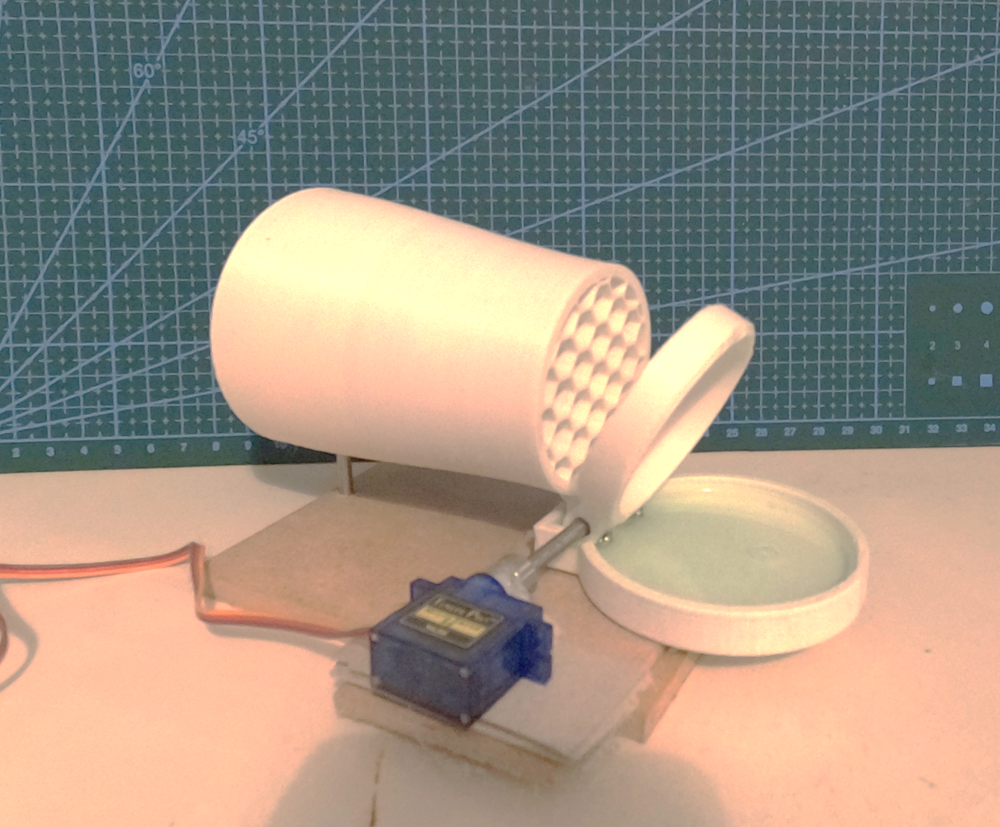
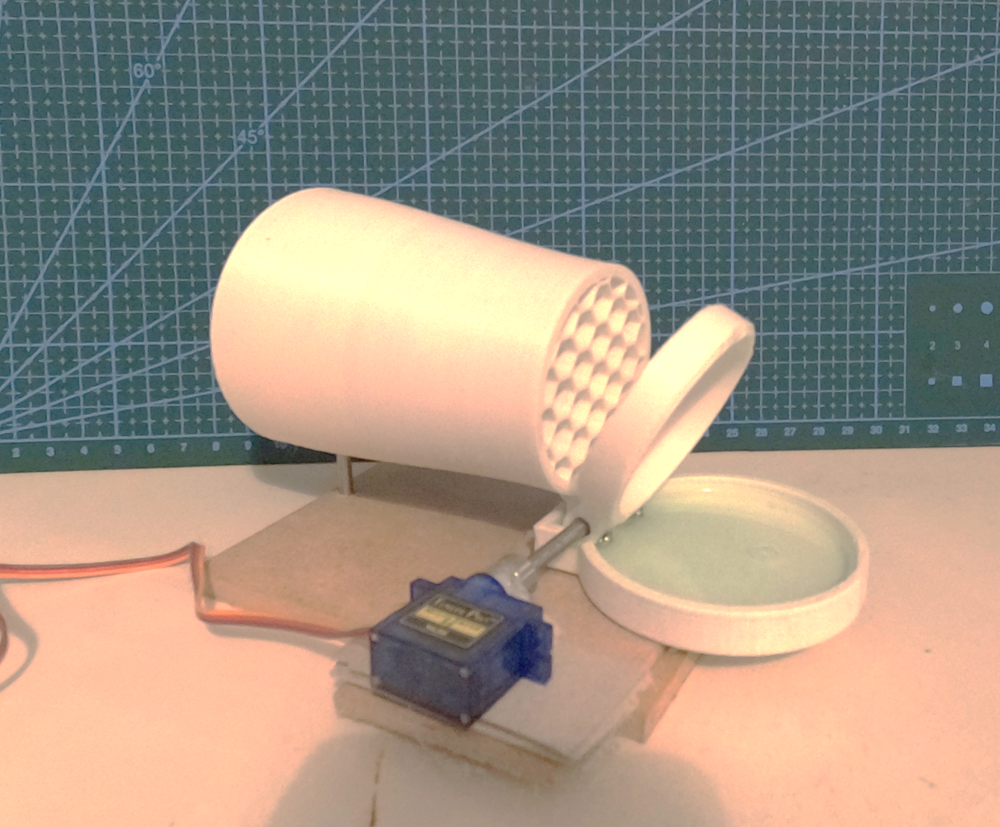

Success in this project came from trying out lots of things, building quick prototypes to find out what works well and what doesn't. These protoypes were created to investigate the different ways of creating soap films for bubbles to be blown through.


 
